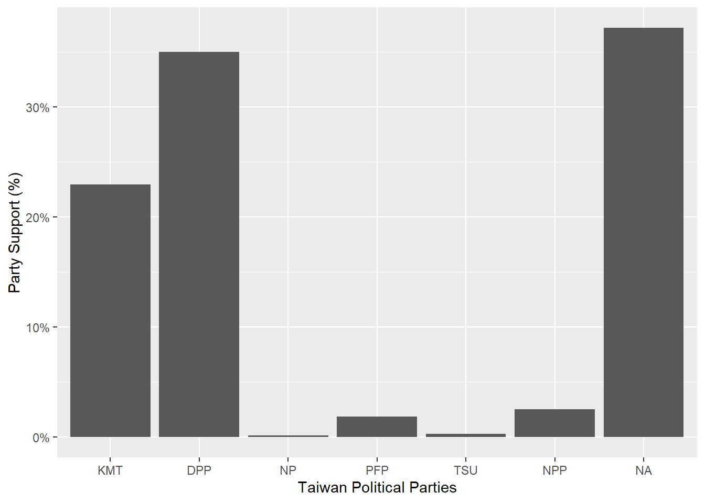
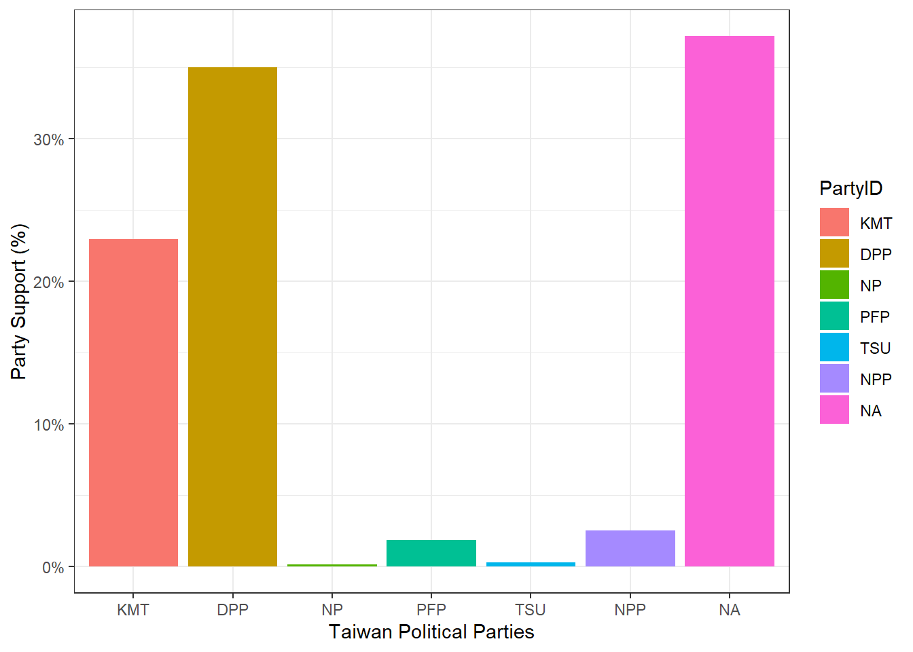
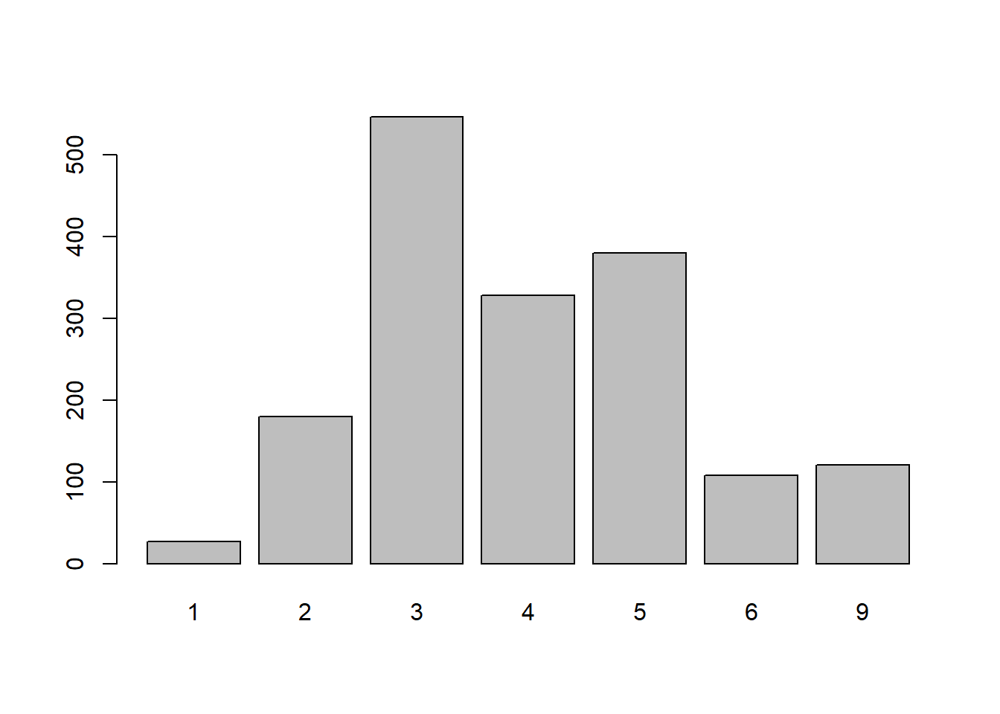
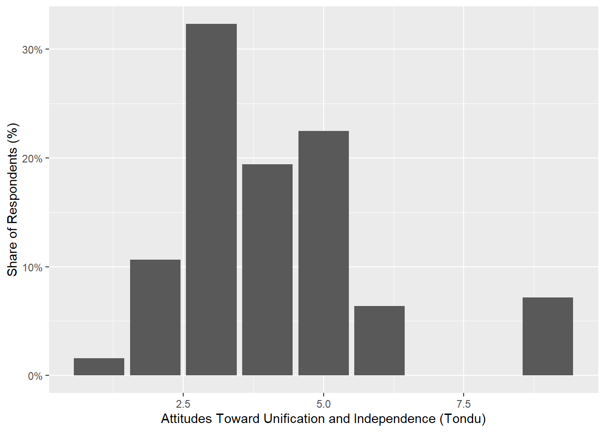
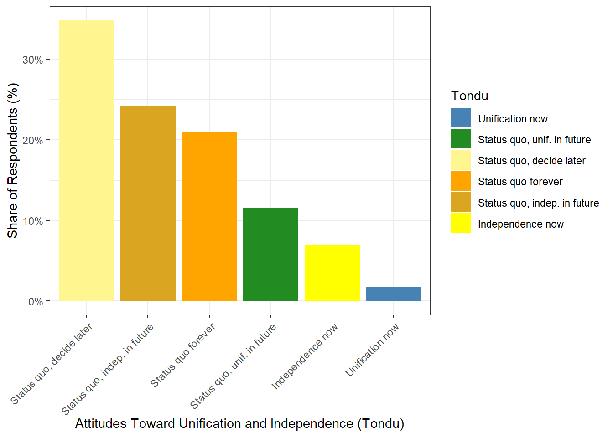

x <- c(1,3,2,5)
x[1] 1 3 2 5x = c(1,6,2)
x[1] 1 6 2y = c(1,4,3)x <- c(1,3,2,5)
x[1] 1 3 2 5x = c(1,6,2)
x[1] 1 6 2y = c(1,4,3)length(x) # What does length() do?[1] 3length(y)[1] 3x+y[1] 2 10 5ls() # List objects in the environment[1] "x" "y"rm(x,y) # Remove objects
ls()character(0)rm(list=ls()) # Danger! What does this do? Not recommended!?matrixstarting httpd help server ... donex=matrix(data=c(1,2,3,4), nrow=2, ncol=2) # Create a 2x2 matrix object
x [,1] [,2]
[1,] 1 3
[2,] 2 4x=matrix(c(1,2,3,4),2,2)
matrix(c(1,2,3,4),2,2,byrow=T) # What about byrow=F? [,1] [,2]
[1,] 1 2
[2,] 3 4sqrt(x) # What does x look like? [,1] [,2]
[1,] 1.000000 1.732051
[2,] 1.414214 2.000000x [,1] [,2]
[1,] 1 3
[2,] 2 4x^2 [,1] [,2]
[1,] 1 9
[2,] 4 16x=rnorm(50) # Generate a vector of 50 numbers using the rnorm() function
y=x+rnorm(50,mean=50,sd=.1) # What does rnorm(50,mean=50,sd=.1) generate?
cor(x,y) # Correlation of x and y[1] 0.9974751set.seed(1303) # Set the seed for Random Number Generator (RNG) to generate values that are reproducible.
rnorm(50) [1] -1.1439763145 1.3421293656 2.1853904757 0.5363925179 0.0631929665
[6] 0.5022344825 -0.0004167247 0.5658198405 -0.5725226890 -1.1102250073
[11] -0.0486871234 -0.6956562176 0.8289174803 0.2066528551 -0.2356745091
[16] -0.5563104914 -0.3647543571 0.8623550343 -0.6307715354 0.3136021252
[21] -0.9314953177 0.8238676185 0.5233707021 0.7069214120 0.4202043256
[26] -0.2690521547 -1.5103172999 -0.6902124766 -0.1434719524 -1.0135274099
[31] 1.5732737361 0.0127465055 0.8726470499 0.4220661905 -0.0188157917
[36] 2.6157489689 -0.6931401748 -0.2663217810 -0.7206364412 1.3677342065
[41] 0.2640073322 0.6321868074 -1.3306509858 0.0268888182 1.0406363208
[46] 1.3120237985 -0.0300020767 -0.2500257125 0.0234144857 1.6598706557set.seed(3) # Try different seeds?
y=rnorm(100)mean(y)[1] 0.01103557var(y)[1] 0.7328675sqrt(var(y))[1] 0.8560768sd(y)[1] 0.8560768x=rnorm(100)
y=rnorm(100)
plot(x,y)
plot(x,y, pch=20, col = "firebrick") # Scatterplot for two numeric variables by default
plot(x,y, pch=20, col = "steelblue",xlab="this is the x-axis",ylab="this is the y-axis",main="Plot of X vs Y") # Add labels
pdf("Figure01.pdf") # Save as pdf, add a path or it will be stored on the project directory
plot(x,y,pch=20, col="forestgreen") # Try different colors?
dev.off() # Close the file using the dev.off functionpng
2 x=seq(1,10) # Same as x=c(1:10)
x [1] 1 2 3 4 5 6 7 8 9 10x=1:10
x [1] 1 2 3 4 5 6 7 8 9 10x=seq(-pi,pi,length=50)
y=x(Adapted from ISLR Chapter 3 Lab: Introduction to R)
A=matrix(1:16,4,4)
A [,1] [,2] [,3] [,4]
[1,] 1 5 9 13
[2,] 2 6 10 14
[3,] 3 7 11 15
[4,] 4 8 12 16A[2,3][1] 10A[c(1,3),c(2,4)] [,1] [,2]
[1,] 5 13
[2,] 7 15A[1:3,2:4] [,1] [,2] [,3]
[1,] 5 9 13
[2,] 6 10 14
[3,] 7 11 15A[1:2,] [,1] [,2] [,3] [,4]
[1,] 1 5 9 13
[2,] 2 6 10 14A[,1:2] [,1] [,2]
[1,] 1 5
[2,] 2 6
[3,] 3 7
[4,] 4 8A[1,][1] 1 5 9 13A[-c(1,3),] # What does -c() do? [,1] [,2] [,3] [,4]
[1,] 2 6 10 14
[2,] 4 8 12 16A[-c(1,3),-c(1,3,4)][1] 6 8dim(A) # Dimensions[1] 4 4Auto=read.table("https://raw.githubusercontent.com/datageneration/knowledgemining/master/data/Auto.data")
Auto=read.table("https://raw.githubusercontent.com/datageneration/knowledgemining/master/data/Auto.data",header=T,na.strings="?")
Auto=read.csv("https://raw.githubusercontent.com/datageneration/knowledgemining/master/data/Auto.csv") # read csv file
# Which function reads data faster?
# Try using this simple method
# time1 = proc.time()
# Auto=read.csv("https://raw.githubusercontent.com/datageneration/knowledgemining/master/data/Auto.csv",header=T,na.strings="?")
# proc.time()-time1
# Check on data
dim(Auto)[1] 397 9Auto[1:4,] # select rows mpg cylinders displacement horsepower weight acceleration year origin
1 18 8 307 130 3504 12.0 70 1
2 15 8 350 165 3693 11.5 70 1
3 18 8 318 150 3436 11.0 70 1
4 16 8 304 150 3433 12.0 70 1
name
1 chevrolet chevelle malibu
2 buick skylark 320
3 plymouth satellite
4 amc rebel sstAuto=na.omit(Auto)
dim(Auto) # Notice the difference?[1] 397 9names(Auto)[1] "mpg" "cylinders" "displacement" "horsepower" "weight"
[6] "acceleration" "year" "origin" "name" Auto=read.table("https://www.statlearning.com/s/Auto.data",header=T,na.strings="?")
dim(Auto)[1] 397 9# plot(cylinders, mpg)
plot(Auto$cylinders, Auto$mpg)
attach(Auto)
plot(cylinders, mpg)
cylinders=as.factor(cylinders)
plot(cylinders, mpg)
plot(cylinders, mpg, col="red")
plot(cylinders, mpg, col="red", varwidth=T)
plot(cylinders, mpg, col="red", varwidth=T,horizontal=T)
plot(cylinders, mpg, col="red", varwidth=T, xlab="cylinders", ylab="MPG")
hist(mpg)
hist(mpg,col=2)
hist(mpg,col=2,breaks=15)
#pairs(Auto)
pairs(~ mpg + displacement + horsepower + weight + acceleration, Auto)
plot(horsepower,mpg)
# identify(horsepower,mpg,name) # Interactive: point and click the dot to identify cases
summary(Auto) mpg cylinders displacement horsepower weight
Min. : 9.00 Min. :3.000 Min. : 68.0 Min. : 46.0 Min. :1613
1st Qu.:17.50 1st Qu.:4.000 1st Qu.:104.0 1st Qu.: 75.0 1st Qu.:2223
Median :23.00 Median :4.000 Median :146.0 Median : 93.5 Median :2800
Mean :23.52 Mean :5.458 Mean :193.5 Mean :104.5 Mean :2970
3rd Qu.:29.00 3rd Qu.:8.000 3rd Qu.:262.0 3rd Qu.:126.0 3rd Qu.:3609
Max. :46.60 Max. :8.000 Max. :455.0 Max. :230.0 Max. :5140
NA's :5
acceleration year origin name
Min. : 8.00 Min. :70.00 Min. :1.000 Length:397
1st Qu.:13.80 1st Qu.:73.00 1st Qu.:1.000 Class :character
Median :15.50 Median :76.00 Median :1.000 Mode :character
Mean :15.56 Mean :75.99 Mean :1.574
3rd Qu.:17.10 3rd Qu.:79.00 3rd Qu.:2.000
Max. :24.80 Max. :82.00 Max. :3.000
summary(mpg) Min. 1st Qu. Median Mean 3rd Qu. Max.
9.00 17.50 23.00 23.52 29.00 46.60 ptbu=c("MASS","ISLR")
install.packages(ptbu, repos='http://cran.us.r-project.org')Installing packages into 'C:/Users/akbar/AppData/Local/R/win-library/4.5'
(as 'lib' is unspecified)package 'MASS' successfully unpacked and MD5 sums checked
package 'ISLR' successfully unpacked and MD5 sums checked
The downloaded binary packages are in
C:\Users\akbar\AppData\Local\Temp\RtmpwrLcvq\downloaded_packageslapply(ptbu, require, character.only = TRUE)Loading required package: MASSWarning: package 'MASS' was built under R version 4.5.2Loading required package: ISLRWarning: package 'ISLR' was built under R version 4.5.2
Attaching package: 'ISLR'The following object is masked _by_ '.GlobalEnv':
Auto[[1]]
[1] TRUE
[[2]]
[1] TRUElibrary(MASS)
library(ISLR)
# Simple Linear Regression
# fix(Boston)
names(Boston) [1] "crim" "zn" "indus" "chas" "nox" "rm" "age"
[8] "dis" "rad" "tax" "ptratio" "black" "lstat" "medv" # lm.fit=lm(medv~lstat)
attach(Boston)
lm.fit=lm(medv~lstat,data=Boston)
attach(Boston)The following objects are masked from Boston (pos = 3):
age, black, chas, crim, dis, indus, lstat, medv, nox, ptratio, rad,
rm, tax, znlm.fit=lm(medv~lstat)
lm.fit
Call:
lm(formula = medv ~ lstat)
Coefficients:
(Intercept) lstat
34.55 -0.95 summary(lm.fit)
Call:
lm(formula = medv ~ lstat)
Residuals:
Min 1Q Median 3Q Max
-15.168 -3.990 -1.318 2.034 24.500
Coefficients:
Estimate Std. Error t value Pr(>|t|)
(Intercept) 34.55384 0.56263 61.41 <2e-16 ***
lstat -0.95005 0.03873 -24.53 <2e-16 ***
---
Signif. codes: 0 '***' 0.001 '**' 0.01 '*' 0.05 '.' 0.1 ' ' 1
Residual standard error: 6.216 on 504 degrees of freedom
Multiple R-squared: 0.5441, Adjusted R-squared: 0.5432
F-statistic: 601.6 on 1 and 504 DF, p-value: < 2.2e-16names(lm.fit) [1] "coefficients" "residuals" "effects" "rank"
[5] "fitted.values" "assign" "qr" "df.residual"
[9] "xlevels" "call" "terms" "model" coef(lm.fit)(Intercept) lstat
34.5538409 -0.9500494 confint(lm.fit) 2.5 % 97.5 %
(Intercept) 33.448457 35.6592247
lstat -1.026148 -0.8739505predict(lm.fit,data.frame(lstat=(c(5,10,15))), interval="confidence") fit lwr upr
1 29.80359 29.00741 30.59978
2 25.05335 24.47413 25.63256
3 20.30310 19.73159 20.87461predict(lm.fit,data.frame(lstat=(c(5,10,15))), interval="prediction") fit lwr upr
1 29.80359 17.565675 42.04151
2 25.05335 12.827626 37.27907
3 20.30310 8.077742 32.52846# What is the differnce between "conference" and "prediction" difference?
plot(lstat,medv)
abline(lm.fit)
abline(lm.fit,lwd=3)
abline(lm.fit,lwd=3,col="red")
plot(lstat,medv,col="red")
plot(lstat,medv,pch=16)
plot(lstat,medv,pch="+")
plot(1:20,1:20,pch=1:20)
par(mfrow=c(2,2))
plot(lm.fit)
plot(predict(lm.fit), residuals(lm.fit))
plot(predict(lm.fit), rstudent(lm.fit))
plot(hatvalues(lm.fit))
which.max(hatvalues(lm.fit))375
375 
lm.fit=lm(medv~lstat+age,data=Boston)
summary(lm.fit)
Call:
lm(formula = medv ~ lstat + age, data = Boston)
Residuals:
Min 1Q Median 3Q Max
-15.981 -3.978 -1.283 1.968 23.158
Coefficients:
Estimate Std. Error t value Pr(>|t|)
(Intercept) 33.22276 0.73085 45.458 < 2e-16 ***
lstat -1.03207 0.04819 -21.416 < 2e-16 ***
age 0.03454 0.01223 2.826 0.00491 **
---
Signif. codes: 0 '***' 0.001 '**' 0.01 '*' 0.05 '.' 0.1 ' ' 1
Residual standard error: 6.173 on 503 degrees of freedom
Multiple R-squared: 0.5513, Adjusted R-squared: 0.5495
F-statistic: 309 on 2 and 503 DF, p-value: < 2.2e-16lm.fit=lm(medv~.,data=Boston)
summary(lm.fit)
Call:
lm(formula = medv ~ ., data = Boston)
Residuals:
Min 1Q Median 3Q Max
-15.595 -2.730 -0.518 1.777 26.199
Coefficients:
Estimate Std. Error t value Pr(>|t|)
(Intercept) 3.646e+01 5.103e+00 7.144 3.28e-12 ***
crim -1.080e-01 3.286e-02 -3.287 0.001087 **
zn 4.642e-02 1.373e-02 3.382 0.000778 ***
indus 2.056e-02 6.150e-02 0.334 0.738288
chas 2.687e+00 8.616e-01 3.118 0.001925 **
nox -1.777e+01 3.820e+00 -4.651 4.25e-06 ***
rm 3.810e+00 4.179e-01 9.116 < 2e-16 ***
age 6.922e-04 1.321e-02 0.052 0.958229
dis -1.476e+00 1.995e-01 -7.398 6.01e-13 ***
rad 3.060e-01 6.635e-02 4.613 5.07e-06 ***
tax -1.233e-02 3.760e-03 -3.280 0.001112 **
ptratio -9.527e-01 1.308e-01 -7.283 1.31e-12 ***
black 9.312e-03 2.686e-03 3.467 0.000573 ***
lstat -5.248e-01 5.072e-02 -10.347 < 2e-16 ***
---
Signif. codes: 0 '***' 0.001 '**' 0.01 '*' 0.05 '.' 0.1 ' ' 1
Residual standard error: 4.745 on 492 degrees of freedom
Multiple R-squared: 0.7406, Adjusted R-squared: 0.7338
F-statistic: 108.1 on 13 and 492 DF, p-value: < 2.2e-16library(car)Loading required package: carDataWarning: package 'carData' was built under R version 4.5.2vif(lm.fit) crim zn indus chas nox rm age dis
1.792192 2.298758 3.991596 1.073995 4.393720 1.933744 3.100826 3.955945
rad tax ptratio black lstat
7.484496 9.008554 1.799084 1.348521 2.941491 lm.fit1=lm(medv~.-age,data=Boston)
summary(lm.fit1)
Call:
lm(formula = medv ~ . - age, data = Boston)
Residuals:
Min 1Q Median 3Q Max
-15.6054 -2.7313 -0.5188 1.7601 26.2243
Coefficients:
Estimate Std. Error t value Pr(>|t|)
(Intercept) 36.436927 5.080119 7.172 2.72e-12 ***
crim -0.108006 0.032832 -3.290 0.001075 **
zn 0.046334 0.013613 3.404 0.000719 ***
indus 0.020562 0.061433 0.335 0.737989
chas 2.689026 0.859598 3.128 0.001863 **
nox -17.713540 3.679308 -4.814 1.97e-06 ***
rm 3.814394 0.408480 9.338 < 2e-16 ***
dis -1.478612 0.190611 -7.757 5.03e-14 ***
rad 0.305786 0.066089 4.627 4.75e-06 ***
tax -0.012329 0.003755 -3.283 0.001099 **
ptratio -0.952211 0.130294 -7.308 1.10e-12 ***
black 0.009321 0.002678 3.481 0.000544 ***
lstat -0.523852 0.047625 -10.999 < 2e-16 ***
---
Signif. codes: 0 '***' 0.001 '**' 0.01 '*' 0.05 '.' 0.1 ' ' 1
Residual standard error: 4.74 on 493 degrees of freedom
Multiple R-squared: 0.7406, Adjusted R-squared: 0.7343
F-statistic: 117.3 on 12 and 493 DF, p-value: < 2.2e-16lm.fit1=update(lm.fit, ~.-age)lm.fit2=lm(medv~lstat+I(lstat^2))
summary(lm.fit2)
Call:
lm(formula = medv ~ lstat + I(lstat^2))
Residuals:
Min 1Q Median 3Q Max
-15.2834 -3.8313 -0.5295 2.3095 25.4148
Coefficients:
Estimate Std. Error t value Pr(>|t|)
(Intercept) 42.862007 0.872084 49.15 <2e-16 ***
lstat -2.332821 0.123803 -18.84 <2e-16 ***
I(lstat^2) 0.043547 0.003745 11.63 <2e-16 ***
---
Signif. codes: 0 '***' 0.001 '**' 0.01 '*' 0.05 '.' 0.1 ' ' 1
Residual standard error: 5.524 on 503 degrees of freedom
Multiple R-squared: 0.6407, Adjusted R-squared: 0.6393
F-statistic: 448.5 on 2 and 503 DF, p-value: < 2.2e-16lm.fit=lm(medv~lstat)
anova(lm.fit,lm.fit2)Analysis of Variance Table
Model 1: medv ~ lstat
Model 2: medv ~ lstat + I(lstat^2)
Res.Df RSS Df Sum of Sq F Pr(>F)
1 504 19472
2 503 15347 1 4125.1 135.2 < 2.2e-16 ***
---
Signif. codes: 0 '***' 0.001 '**' 0.01 '*' 0.05 '.' 0.1 ' ' 1par(mfrow=c(2,2))
plot(lm.fit2)
lm.fit5=lm(medv~poly(lstat,5))
summary(lm.fit5)
Call:
lm(formula = medv ~ poly(lstat, 5))
Residuals:
Min 1Q Median 3Q Max
-13.5433 -3.1039 -0.7052 2.0844 27.1153
Coefficients:
Estimate Std. Error t value Pr(>|t|)
(Intercept) 22.5328 0.2318 97.197 < 2e-16 ***
poly(lstat, 5)1 -152.4595 5.2148 -29.236 < 2e-16 ***
poly(lstat, 5)2 64.2272 5.2148 12.316 < 2e-16 ***
poly(lstat, 5)3 -27.0511 5.2148 -5.187 3.10e-07 ***
poly(lstat, 5)4 25.4517 5.2148 4.881 1.42e-06 ***
poly(lstat, 5)5 -19.2524 5.2148 -3.692 0.000247 ***
---
Signif. codes: 0 '***' 0.001 '**' 0.01 '*' 0.05 '.' 0.1 ' ' 1
Residual standard error: 5.215 on 500 degrees of freedom
Multiple R-squared: 0.6817, Adjusted R-squared: 0.6785
F-statistic: 214.2 on 5 and 500 DF, p-value: < 2.2e-16summary(lm(medv~log(rm),data=Boston))
Call:
lm(formula = medv ~ log(rm), data = Boston)
Residuals:
Min 1Q Median 3Q Max
-19.487 -2.875 -0.104 2.837 39.816
Coefficients:
Estimate Std. Error t value Pr(>|t|)
(Intercept) -76.488 5.028 -15.21 <2e-16 ***
log(rm) 54.055 2.739 19.73 <2e-16 ***
---
Signif. codes: 0 '***' 0.001 '**' 0.01 '*' 0.05 '.' 0.1 ' ' 1
Residual standard error: 6.915 on 504 degrees of freedom
Multiple R-squared: 0.4358, Adjusted R-squared: 0.4347
F-statistic: 389.3 on 1 and 504 DF, p-value: < 2.2e-16# fix(Carseats)
names(Carseats) [1] "Sales" "CompPrice" "Income" "Advertising" "Population"
[6] "Price" "ShelveLoc" "Age" "Education" "Urban"
[11] "US" lm.fit=lm(Sales~.+Income:Advertising+Price:Age,data=Carseats)
summary(lm.fit)
Call:
lm(formula = Sales ~ . + Income:Advertising + Price:Age, data = Carseats)
Residuals:
Min 1Q Median 3Q Max
-2.9208 -0.7503 0.0177 0.6754 3.3413
Coefficients:
Estimate Std. Error t value Pr(>|t|)
(Intercept) 6.5755654 1.0087470 6.519 2.22e-10 ***
CompPrice 0.0929371 0.0041183 22.567 < 2e-16 ***
Income 0.0108940 0.0026044 4.183 3.57e-05 ***
Advertising 0.0702462 0.0226091 3.107 0.002030 **
Population 0.0001592 0.0003679 0.433 0.665330
Price -0.1008064 0.0074399 -13.549 < 2e-16 ***
ShelveLocGood 4.8486762 0.1528378 31.724 < 2e-16 ***
ShelveLocMedium 1.9532620 0.1257682 15.531 < 2e-16 ***
Age -0.0579466 0.0159506 -3.633 0.000318 ***
Education -0.0208525 0.0196131 -1.063 0.288361
UrbanYes 0.1401597 0.1124019 1.247 0.213171
USYes -0.1575571 0.1489234 -1.058 0.290729
Income:Advertising 0.0007510 0.0002784 2.698 0.007290 **
Price:Age 0.0001068 0.0001333 0.801 0.423812
---
Signif. codes: 0 '***' 0.001 '**' 0.01 '*' 0.05 '.' 0.1 ' ' 1
Residual standard error: 1.011 on 386 degrees of freedom
Multiple R-squared: 0.8761, Adjusted R-squared: 0.8719
F-statistic: 210 on 13 and 386 DF, p-value: < 2.2e-16attach(Carseats)
contrasts(ShelveLoc) Good Medium
Bad 0 0
Good 1 0
Medium 0 1summary(lm(medv~lstat*age,data=Boston))
Call:
lm(formula = medv ~ lstat * age, data = Boston)
Residuals:
Min 1Q Median 3Q Max
-15.806 -4.045 -1.333 2.085 27.552
Coefficients:
Estimate Std. Error t value Pr(>|t|)
(Intercept) 36.0885359 1.4698355 24.553 < 2e-16 ***
lstat -1.3921168 0.1674555 -8.313 8.78e-16 ***
age -0.0007209 0.0198792 -0.036 0.9711
lstat:age 0.0041560 0.0018518 2.244 0.0252 *
---
Signif. codes: 0 '***' 0.001 '**' 0.01 '*' 0.05 '.' 0.1 ' ' 1
Residual standard error: 6.149 on 502 degrees of freedom
Multiple R-squared: 0.5557, Adjusted R-squared: 0.5531
F-statistic: 209.3 on 3 and 502 DF, p-value: < 2.2e-16# Import the TEDS 2016 data in Stata format using the haven package
##install.packages("haven")
library(haven)Warning: package 'haven' was built under R version 4.5.2TEDS_2016 <- read_stata("https://github.com/datageneration/home/blob/master/DataProgramming/data/TEDS_2016.dta?raw=true")
# Prepare the analyze the Party ID variable
# Assign label to the values (1=KMT, 2=DPP, 3=NP, 4=PFP, 5=TSU, 6=NPP, 7="NA")
TEDS_2016$PartyID <- factor(TEDS_2016$PartyID, labels=c("KMT","DPP","NP","PFP", "TSU", "NPP","NA"))# Check the variable
attach(TEDS_2016)The following object is masked from Carseats:
AgeThe following object is masked from Boston (pos = 7):
ageThe following object is masked from Boston (pos = 8):
agehead(PartyID)[1] NA NA KMT NA NA DPP
Levels: KMT DPP NP PFP TSU NPP NAtail(PartyID)[1] NA NA DPP NA NA NA
Levels: KMT DPP NP PFP TSU NPP NA# Run a frequency table of the Party ID variable using the descr package
##install.packages("descr")
library(descr)Warning: package 'descr' was built under R version 4.5.2freq(TEDS_2016$PartyID)
TEDS_2016$PartyID
Frequency Percent
KMT 388 22.9586
DPP 591 34.9704
NP 3 0.1775
PFP 32 1.8935
TSU 5 0.2959
NPP 43 2.5444
NA 628 37.1598
Total 1690 100.0000# Plot the Party ID variable
library(ggplot2)
Attaching package: 'ggplot2'The following object is masked from 'Auto':
mpgggplot(TEDS_2016, aes(PartyID)) +
geom_bar()
ggplot(TEDS_2016, aes(PartyID)) +
geom_bar(aes(y = (..count..)/sum(..count..))) +
scale_y_continuous(labels=scales::percent) +
ylab("Party Support (%)") +
xlab("Taiwan Political Parties")Warning: The dot-dot notation (`..count..`) was deprecated in ggplot2 3.4.0.
ℹ Please use `after_stat(count)` instead.
ggplot(TEDS_2016, aes(PartyID)) +
geom_bar(aes(y = (..count..)/sum(..count..),fill=PartyID)) +
scale_y_continuous(labels=scales::percent) +
ylab("Party Support (%)") +
xlab("Taiwan Political Parties") +
theme_bw()
ggplot(TEDS_2016, aes(PartyID)) +
geom_bar(aes(y = (..count..)/sum(..count..),fill=PartyID)) +
scale_y_continuous(labels=scales::percent) +
ylab("Party Support (%)") +
xlab("Taiwan Political Parties") +
theme_bw() +
scale_fill_manual(values=c("steel blue","forestgreen","khaki1","orange","goldenrod","yellow","grey"))
##install.packages("tidyverse")
library(tidyverse)Warning: package 'tidyverse' was built under R version 4.5.2Warning: package 'lubridate' was built under R version 4.5.2── Attaching core tidyverse packages ──────────────────────── tidyverse 2.0.0 ──
✔ dplyr 1.1.4 ✔ readr 2.1.5
✔ forcats 1.0.0 ✔ stringr 1.5.1
✔ lubridate 1.9.4 ✔ tibble 3.3.0
✔ purrr 1.1.0 ✔ tidyr 1.3.1
── Conflicts ────────────────────────────────────────── tidyverse_conflicts() ──
✖ dplyr::filter() masks stats::filter()
✖ dplyr::lag() masks stats::lag()
✖ dplyr::recode() masks car::recode()
✖ dplyr::select() masks MASS::select()
✖ purrr::some() masks car::some()
ℹ Use the conflicted package (<http://conflicted.r-lib.org/>) to force all conflicts to become errorsTEDS_2016 %>%
count(PartyID) %>%
mutate(perc = n / nrow(TEDS_2016)) -> T2
ggplot(T2, aes(x = reorder(PartyID, -perc),y = perc,fill=PartyID)) +
geom_bar(stat = "identity") +
ylab("Party Support (%)") +
xlab("Taiwan Political Parties") +
theme_bw() +
scale_fill_manual(values=c("steel blue","forestgreen","khaki1","orange","goldenrod","yellow","grey"))
The TEDS2016 dataset is a list of information that contains data on Taiwanese political parties and its support. Parties such as the Democratic Progressive Party (DPP), Kuomintang (KMT), New Power Party (NPP), People’s First Party (PFP), Taiwan Solidarity Party (TSU), and New Party (NP), have received public support. While the DPP and KMT have the most support, most of the data however is missing, which are labeled as N/A.
In order to deal with missing data, the N/A category may be left as its own category, demonstrating that there is a number of non-responses. Another way to deal with missing data is to exclude the N/A category to remove any bias.
In the TEDS_2016 dataset, I explore the relationship between Tondu and other variables such as female, DPP, age, income, edu, Taiwanese and Econ_worse. Tondu is a variable that represents a position focused on unification and independence. Since the dataset already provides the variables, I’m going to use AI models such as ChatGBT to assist me with the first code for a close up comparison between Tondu and female. Following after, I will continue the coding with Tondu and the rest.
table(TEDS_2016$Tondu, TEDS_2016$female)
0 1
1 13 14
2 118 62
3 295 251
4 151 177
5 206 174
6 54 54
9 31 90table(TEDS_2016$Tondu, TEDS_2016$DPP)
0 1
1 26 1
2 147 33
3 378 168
4 256 72
5 144 236
6 38 70
9 110 11table(TEDS_2016$Tondu, TEDS_2016$age)
20 21 22 23 24 25 26 27 28 29 30 31 32 33 34 35 36 37 38 39 40 41 42 43 44
1 0 0 0 0 1 0 0 0 0 1 0 0 1 1 0 0 0 0 1 0 0 1 0 0 0
2 0 0 0 1 2 1 0 2 1 1 0 0 0 0 4 5 4 4 2 3 3 3 3 1 3
3 0 9 11 9 11 12 12 5 10 11 9 10 6 7 13 13 6 19 13 9 14 9 16 10 8
4 0 6 5 3 2 4 4 3 3 4 4 2 3 2 11 5 3 3 3 6 6 2 6 4 6
5 2 14 18 11 13 10 11 14 8 7 11 8 8 3 13 9 8 5 8 7 6 9 6 5 10
6 0 6 3 2 4 1 1 0 2 1 1 2 2 0 3 4 2 4 3 1 2 2 2 2 2
9 0 0 0 0 0 0 1 0 1 0 0 1 0 2 2 0 1 0 1 1 0 1 1 2 1
45 46 47 48 49 50 51 52 53 54 55 56 57 58 59 60 61 62 63 64 65 66 67 68 69
1 0 0 0 1 0 0 0 0 0 0 1 2 1 0 3 1 1 0 0 0 0 1 1 1 1
2 5 3 6 4 2 3 1 9 6 2 6 3 5 2 4 11 4 2 3 1 6 4 4 7 4
3 8 17 13 16 22 15 13 12 8 8 10 17 13 9 12 10 8 11 6 10 3 10 8 6 5
4 3 8 7 8 8 5 11 3 8 7 6 6 12 9 5 5 12 6 6 12 12 6 5 4 8
5 4 6 7 6 5 7 4 6 3 6 9 6 6 6 11 9 3 4 3 4 8 2 4 3 1
6 4 1 1 1 1 1 1 1 1 2 1 3 3 0 1 4 3 1 4 0 1 2 2 0 2
9 0 0 1 0 3 2 3 1 2 2 7 0 1 2 2 4 2 0 3 6 4 5 4 3 0
70 71 72 73 74 75 76 77 78 79 80 81 82 83 84 85 86 87 88 89 90 91 92 94 95
1 0 0 1 3 1 0 1 0 0 0 0 0 0 0 0 0 1 0 0 0 0 0 0 0 0
2 4 1 1 2 1 4 2 1 1 1 1 1 0 0 0 4 1 3 0 1 0 0 0 0 0
3 3 3 2 1 4 1 1 0 1 1 2 2 1 0 0 0 1 0 0 1 0 0 0 0 0
4 2 1 7 7 3 4 3 0 1 1 3 0 3 3 2 1 2 0 0 0 0 1 1 1 0
5 1 2 4 1 3 1 3 1 1 1 1 0 0 0 2 0 1 0 0 0 0 0 0 0 1
6 0 0 1 1 1 3 2 0 1 0 2 0 1 0 1 1 0 0 0 0 1 0 0 0 0
9 3 1 3 2 0 3 2 5 4 5 3 3 3 4 0 1 2 1 1 1 1 0 1 0 0
100
1 0
2 1
3 0
4 0
5 0
6 0
9 0table(TEDS_2016$Tondu, TEDS_2016$income)
1 2 3 4 5 5.5 6 7 8 9 10
1 7 3 2 1 0 5 4 0 2 2 1
2 23 12 11 14 22 20 17 12 16 13 20
3 47 42 43 34 52 96 48 38 56 36 54
4 50 25 19 24 18 76 24 20 24 19 29
5 38 23 23 38 36 52 23 39 35 31 42
6 27 7 8 7 7 21 7 5 6 4 9
9 35 7 5 1 5 60 2 1 1 2 2table(TEDS_2016$Tondu, TEDS_2016$edu)
1 2 3 4 5
1 10 3 10 1 2
2 31 14 58 31 45
3 60 49 157 71 208
4 71 45 93 36 80
5 36 30 88 34 192
6 32 11 31 8 26
9 82 9 12 5 9table(TEDS_2016$Tondu, TEDS_2016$Taiwanese)
0 1
1 16 11
2 132 48
3 244 302
4 136 192
5 49 331
6 4 104
9 49 72table(TEDS_2016$Tondu, TEDS_2016$Econ_worse)
0 1
1 14 13
2 78 102
3 239 307
4 157 171
5 155 225
6 39 69
9 71 50First, the relationship between Tondu and the female variable shows a clear association, suggesting that women play an important role in shaping attitudes toward unification and independence in Taiwan. Second, there is a strong relationship between Tondu and the DPP variable, as respondents who strongly identify and support the DPP are more likely to favor independence-oriented positions, while non-DPP supporters tend to be more concentrated in status quo or unification positions. Third, the relationships between Tondu and age, income, and education are more difficult to interpret because these variables are continuous, making simple contingency tables inappropriate and complex. Fourth, the Taiwanese variable is strongly associated with Tondu, indicating that national identity plays a crucial role in preferences regarding unification and independence. Lastly, economic perceptions (Econ_worse) are also associated with Tondu, suggesting that views about economic conditions may influence attitudes toward unification and independence.
table(TEDS_2016$Tondu, TEDS_2016$votetsai)
0 1
1 14 6
2 97 48
3 173 229
4 132 112
5 36 274
6 8 79
9 11 42The votetsai variable focuses on the vote for the DPP candidate Tsai Ing-wen. The data indicates that there is a strong relationship between these two variables. Respondents that voted for Tsai Ing-wen are more likely to favor independence and unification than those that do not support the candidate.
library(haven)
TEDS_2016 <- read_stata("https://github.com/datageneration/home/blob/master/DataProgramming/data/TEDS_2016.dta?raw=true")
TEDS_2016$Tondu<-as.numeric(TEDS_2016$Tondu,labels=c("Unification now”,
“Status quo, unif. in future”, “Status quo, decide later", "Status quo
forever", "Status quo, indep. in future", "Independence now”, “No response"))
attach(TEDS_2016)The following objects are masked from TEDS_2016 (pos = 14):
age, Age, Arear, Blue, Career, Career8, District, DPP, Econ_worse,
econworse5, edu, Edu, Ethnic, female, Govt_dont_care,
Govt_for_public, green, Green, highincome, income, income_nm,
Independence, Inequality, inequality5, KMT, lowincome,
Mainland_father, Minnan_father, nI2, No_Party, noparty, north, npp,
Party, PartyID, pfp, pubwelf5, Sex, South, sq, Taiwanese, Tondu,
Tondu3, Unification, voteblue, voteblue_nm, votedpp_1, votekmt,
votekmt_1, votekmt_nm, votetsai, votetsai_all, votetsai_nm,
whitecollarThe following object is masked from Carseats:
AgeThe following object is masked from Boston (pos = 19):
ageThe following object is masked from Boston (pos = 20):
agehead(Tondu)[1] 3 5 3 5 9 4tail(Tondu)[1] 2 3 4 4 3 3library(descr)
freq(TEDS_2016$Tondu)
TEDS_2016$Tondu
Frequency Percent
1 27 1.598
2 180 10.651
3 546 32.308
4 328 19.408
5 380 22.485
6 108 6.391
9 121 7.160
Total 1690 100.000library(ggplot2)
ggplot(TEDS_2016, aes(Tondu)) +
geom_bar()ggplot(TEDS_2016, aes(Tondu)) +
geom_bar(aes(y = (..count..)/sum(..count..))) +
scale_y_continuous(labels=scales::percent) +
ylab("Share of Respondents (%)") +
xlab("Attitudes Toward Unification and Independence (Tondu)")
ggplot(TEDS_2016, aes(Tondu)) +
geom_bar(aes(y = (..count..)/sum(..count..),fill=Tondu)) +
scale_y_continuous(labels=scales::percent) +
ylab("Share of Respondents (%)") +
xlab("Attitudes Toward Unification and Independence (Tondu)") +
theme_bw()Warning: The following aesthetics were dropped during statistical transformation: fill.
ℹ This can happen when ggplot fails to infer the correct grouping structure in
the data.
ℹ Did you forget to specify a `group` aesthetic or to convert a numerical
variable into a factor?ggplot(TEDS_2016, aes(Tondu)) +
geom_bar(aes(y = (..count..)/sum(..count..),fill=Tondu)) +
scale_y_continuous(labels=scales::percent) +
ylab("Share of Respondents (%)") +
xlab("Attitudes Toward Unification and Independence (Tondu)") +
theme_bw() +
scale_fill_manual(values=c("steel blue","forestgreen","khaki1","orange","goldenrod","yellow","grey"))Warning: The following aesthetics were dropped during statistical transformation: fill.
ℹ This can happen when ggplot fails to infer the correct grouping structure in
the data.
ℹ Did you forget to specify a `group` aesthetic or to convert a numerical
variable into a factor?
library(tidyverse)
library(scales)
Attaching package: 'scales'The following object is masked from 'package:purrr':
discardThe following object is masked from 'package:readr':
col_factor# Make Tondu discrete (factor) with labels
TEDS_2016 <- TEDS_2016 %>%
mutate(
Tondu = factor(
Tondu,
levels = c(1, 2, 3, 4, 5, 6, 7),
labels = c(
"Unification now",
"Status quo, unif. in future",
"Status quo, decide later",
"Status quo forever",
"Status quo, indep. in future",
"Independence now",
"No response"
)
)
)
T2 <- TEDS_2016 %>%
filter(!is.na(Tondu)) %>%
count(Tondu) %>%
mutate(perc = n / sum(n))
ggplot(T2, aes(x = reorder(Tondu, -perc), y = perc, fill = Tondu)) +
geom_bar(stat = "identity") +
scale_y_continuous(labels = percent) +
ylab("Share of Respondents (%)") +
xlab("Attitudes Toward Unification and Independence (Tondu)") +
theme_bw() +
theme(axis.text.x = element_text(angle = 45, hjust = 1)) +
scale_fill_manual(values = c(
"steel blue","forestgreen","khaki1",
"orange","goldenrod","yellow","grey"
))